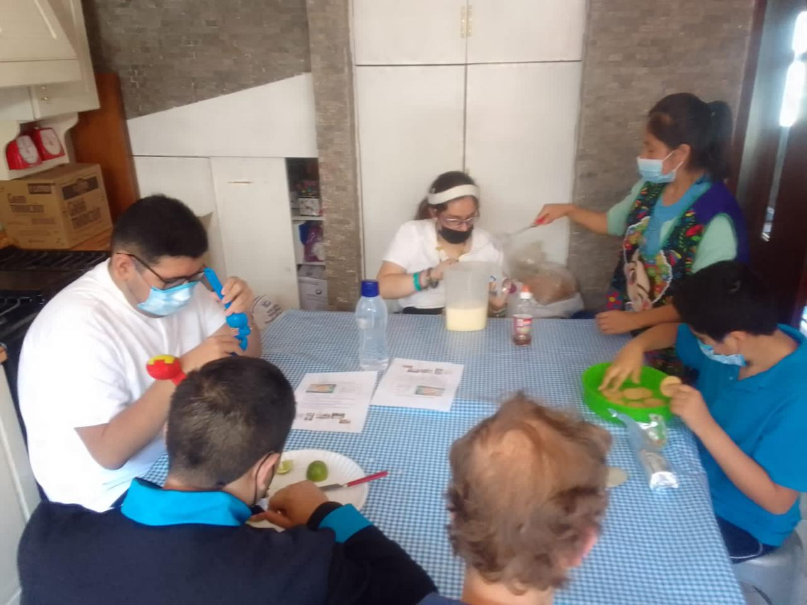
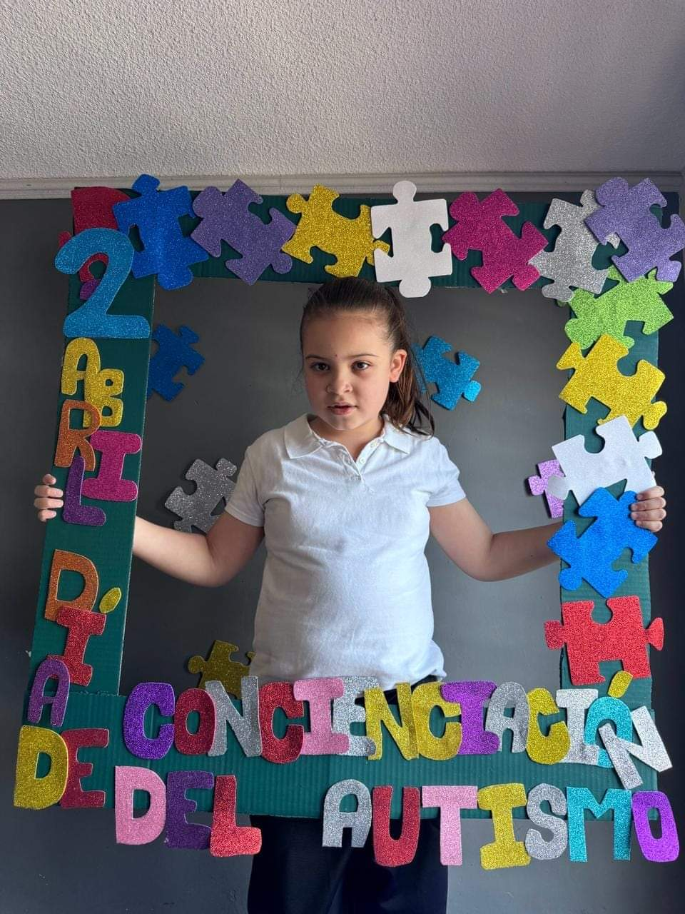

Somos una asociación no lucrativa, dedicada a promover el desarrollo de capacidades y habilidades de niños, jóvenes y adultos que están dentro del espectro autista, a través de diversas actividades psicoeducativas, programas personalizados, metodología especializada, evaluación, diagnóstico y trabajo cercano con las familias, para que puedan convivir sanamente en diferentes entornos sociales.
Ser un centro modelo que mejore la calidad de vida de niños, jóvenes y adultos que estén dentro del espectro autista, y que propicie su integración en la sociedad a través de una actividad productiva que les permita ser autosuficientes.
